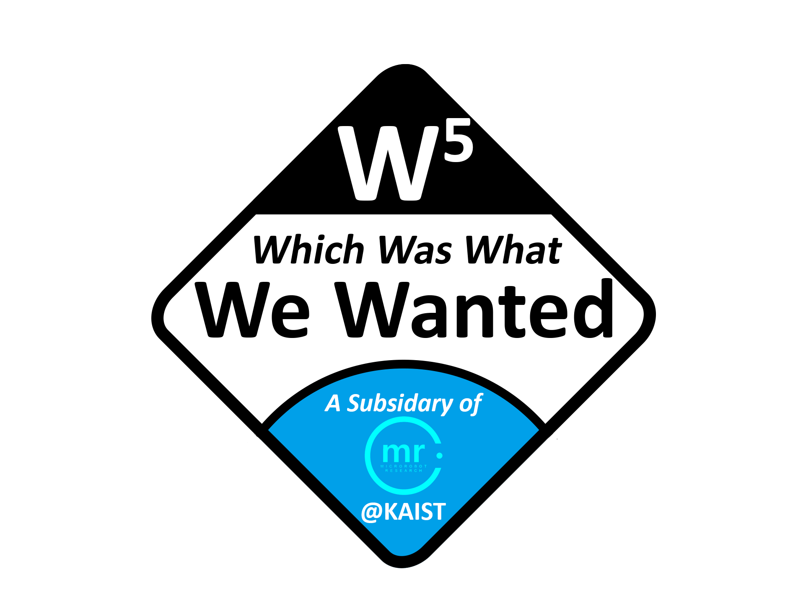

W5.KAIST

W5.KAIST 팀 소개
W5는 Which Was What We Wanted의 약자로 카이스트 로봇동아리 미스터 내의 프로젝트 팀입니다.
2014년 캔위성 경진대회 참가를 위해 결성하였고
이후 지속적인 기술 개발, 대회 참가 및 논문과 학회 발표 등의 연구 활동을 진행하고 있습니다.
현재
- 미생물 배양 및 검사 자동화
- 멀티콥터형 무인기 (통칭 드론) 응용 프로젝트
- Environmental Robotics
- Bio-inspired Robotics
등의 다양한 주제로 연구를 진행하고 있습니다.
W5.KAIST GitHub Page W5.KAIST Youtube Channel팀 연혁
프로젝트
로봇 플랫폼 부착식 위치인식용 데이터 수집 시스템 2017
김규광, 김재우, 김휘민
실내 위치 인식에는 Wi-Fi fingerprinting과 자기장 SLAM, 레이저 스캐너 등의 다양한 센서들이 사용되며 map 생성을 위해 건물 내부를 스캔하는 작업이 필요하다. 큰 건물 등에서의 수집 작업을 줄이기 위해 로봇 청소기, 청소용 카트 등에 부착 가능한 센서 logging 시스템을 제작하였으며 실제 로봇청소기 모델 로봇에 부착하여 검증하였다.

BioNetTopol 2016
김규광, 임휘준
Mesh 혹은 random network topology가 센서 네트워크 구성 시 일반적인 네트워크 구조로 사용되나 이를 생체 네트워크에서 나타나는 topology를 적용함으로서 성능 및 robustness 를 올리고자 하였다. 생체 네트워크에서 주로 보이는 scale-free network 구조의 경우 임의의 node에서 node로 이어지는 평균 거리가 3 정도로 축소되며 다수의 link가 연결된 hub, 링크 수는 적으나 주요 hub들을 이어주는 bottleneck node를 계산을 통해 얻을 수 있어 전체적인 패킷 전송 효율이 올라가며 hub 및 bottleneck의 성능 증대 시 전체적인 시스템 성능이 좋아지는 것을 확인할 수 있었다.

BioLabAST-LEDMarker 2017
김규광, 현지음
항생제 감수성 검사에서의 OD를 사용하지 않고도 성장 정도 측정을 위해 BioLabAST 프로젝트를 진행하였으나 어두운 배양실, 커다란 배양 용기, 진한 색의 배양배지 등으로 인해 종이로 만든 stripe pattern marker가 잘 보이지 않는 경우가 발생하였으며 이를 해결하기 위해 마커 자체를 LED로 만들어 스스로 빛을 내는 Active 마커 사용. LED 를 영상처리로 인식하여 해당 지역에 대한 FFT 값을 측정하여 마커가 보이지 않는 정도를 계산하여 성장도 측정.
BioLabAST 2016
김규광, 최덕규, 임휘준, 김형근
항생제 감수성, 생물독성 등의 측정을 위해 미생물 생장 정도를 아는 것이 중요하며 다양한 생명공학 실험에도 적절한 미생물 생장 측정을 요구함. 생장 관측에는 흡광도 측정이 사실상 표준으로 사용되나 측정을 위해 측정 장비의 경우 고가이며 직접 제작되는 저가형 흡광도 측정기들의 경우 레이저-광센서의 alignment 등에 많은 정비를 요구한다. 또한 배양액의 총량이 적은 경우에는 적용할 수가 없다. 본 프로젝트는 배양액의 탁도가 증가한다는 특성을 이용해 레이저 대신 배양 용기 뒷면에 마커를 부착하고 탁도 증가에 따른 마커의 blurring을 측정하는 방식으로 현장에서 생장 정도 측정을 하기 위해 제안되었다.

VANSI 2016
김규광, 현지음, 최덕규
건축물 구조 모니터링 (Structural Health Monitoring, SHM) 에 드론을 포함한 많은 로봇이 사용되나 교량의 기둥 (column) 부분의 경우 수면에 인접하거나 물보라 등으로 인해 통상의 벽면등반 로봇이 접근하기 어려운 지역이다. 이러한 구역의 SHM을 위해 무인선에 카메라를 장착하였으며 물살 등에 영향받지 않고 column에 인접하게 부착할 수 있도록 수직 방향 thruster를 장착하였다. 또한 레이저 스캐너를 이용해 다리 교량 2개 사이에서의 위치 인식 또한 구현하였다.
Flying Doge 2016
김규광, 김휘민, 최덕규
선박 화재사고의 상당수가 연료 주입 및 적재 중 인화성 기체가 갑판에 고여 폭발함으로서 발생한다. 드론에 바퀴를 부착하여 고속으로 갑판에 붙어 이동하며 낮은 고도의 가스 농도를 측정하되 필요할 경우 높이 날아 장애물을 피하거나 검사가 필요한 구역으로 이동할 수 있도록 하였다. 가스 센서와 위치 인식 보조용 RFID 센서를 부착하였다.

실내 위치 인식용 마커의 무결성 검사 로봇 2016
김규광, 최덕규, 임휘준
로봇 위치 인식용 부착식 마커의 경우 로봇 주행 및 기타 원인에 의한 물리적인 충격이나 먼지 등의 오염물질에 의해 손상될 수 있다. 본 프로젝트에서는 차륜 형태의 실내에서 주행 가능하고 QR 코드 마커를 인식해 로봇의 엔코더/센서를 이용한 위치와 비교하여 해당 위치에 설치된 QR 코드가 정상 상태인지를 확인하는 로봇을 개발하고자 한다. 또한 RFID/NFC 태그를 QR 코드와 같이 사용하여 QR 코드 손상 시에도 위치 인식을 도와줄 수 있는 시스템을 제안하고자 한다.

BioLab MYCO 2014
김규광, 김형근, 노희건, 임휘준
개발도상국 등지에서 저가로 결핵균의 약물 감수성 검사를 진행하기 위해 개발된 저전력 배지 모니터링 시스템이다. 질산환원검사법을 사용하여 결핵균의 성장 여부를 검출한다. 사용 전력을 최대한 줄이기 위해 대기 모드 사용시 µA 단위의 전력만을 소모하도록 설계되었으며 태양열 등을 사용하여 스스로 배터리를 충전하는 기능 또한 가지고 있다. 검사 데이터는 Bluetooth Low Energy 비콘을 통해 주변으로 broadcasting 되며 사용자는 스마트폰으로 복잡한 다대다 연결 없이 다수의 배양기의 상태를 확인할 수 있다.

MORROS 2016
김규광, 임휘준, 최덕규, 김휘민
여러 전염병의 원인이 되는 모기를 효과적으로 방제하기 위해 모기가 서식하는 웅덩이를 찾아내고 방제약을 투하하는 드론을 제작하였다. 스마트폰을 사용하여 비행 영상과 위치를 전송하고 레이저와 초음파 센서를 사용해 웅덩이 지형을 인식하며 수송중인 고형 방제약을 투약할 수 있는 구조이다. 기계학습을 이용해 웅덩이를 더 효율적으로 인식할 수 있는 기능 또한 개발 중이다.

DST 2015
김규광, 임휘준, 김휘민, 최덕규
드론이 자주 사용되면서 드론 관련 안전사고가 증가하고 스스로의 드론을 점검하고 드론 간의 충돌 방지를 위한 시스템을 개발하였다. 드론 로터의 조립 상태를 모터 본체와 프로펠러의 회전수를 따로 측정하여 조립 여부를 점검하는 기술과 다른 드론 혹은 유인 항공기와의 충돌 가능성 여부를 확인하는 시스템을 개발하였다.

WARD 2015
김규광, 최덕규, 김휘민
개발도상국의 산악 지역에서는 기상 측정 장치가 부족하며 고산 지대를 오가는 비행기들에 여압실이 없어 산등성이를 따라 날다가 기상 정보의 부족으로 사고를 일으키거나 회항하는 등의 문제가 발생한다. 드론에 기상 측정 센서를 부착하여 기상 정보가 필요한 산악 지역으로 쿼드콥터를 날려 해당 지역의 기상 정보를 획득할 수 있는 시스템을 제작하였다.

Polaris 2015
김규광, 최덕규, 김휘민, 임휘준
드론의 사용이 늘어나면서 도심 지역 등 건물 근처에서 드론을 비행시키는 경우가 많고 이로 인해 GPS 신호가 들어오지 않거나 왜곡되는 곳에서 GPS를 보정할 항법장치가 필요해진다. 레이저 지시기와 드론 하단에 부착된 카메라의 영상처리를 이용하여 호버링 중인 드론의 정확한 위치를 계산하고 Kalman Filter를 이용하여 GPS를 보정하는 연구를 진행하였다.

BacIN: 박테리아 모사 오염 물질 추적 알고리즘 2014
김규광, 현지음, 최덕규, 김형근
원유 및 가스 유출 등의 환경 문제가 발생하였을 때 오염물질은 깃털 모양의 plume을 형성하면서 길게 퍼지는 성질을 가지게 된다. 이러한 오염 물질 유출 상황에서 가장 오염물 농도가 높은 유출원의 위치를 찾아내기 위해 미생물이 먹이로 사용하는 화학물질을 추적하는 방식의 수학적 모델을 사용하여 로봇을 제어하며 생물의 통신 방식인 페로몬을 모사하여 다수의 로봇이 협업하는 알고리즘을 개발하였다.
Litmus BioLabs 2014
김규광, 김형근, 노희건, 임휘준
식물공장, 양어장, 식품공장 및 수원지 등에서 대장균총의 존재 여부를 검사하기 위한 시스템. 배양검사가 PCR 등의 분자생물학적 검사에 비해 값이 싸나 labor-intensive하다는 단점을 없애기 위해 원격지에서 펌프 제어를 이용해 물 샘플의 흡입과 검출용 배양액 혼합, 배양 후 배지 색상 전송을 이용한 검출 과정을 자동화하고자 하였다.
Flying BioLab 2014
김규광, 김형근, 노희건
캔위성(CanSat) 이라는 인공위성 모사 저고도 발사체 플랫폼에 미생물 배지와 레이저 센서로 구성된 광학 검출기를 부착하여, 탄저균 등의 생물학적 오염 구역 등에 발사하여 대기 중 및 토양 근처의 미생물 성장을 조사할 수 있는 시스템. 약 600m 상공에서의 GPS와 기압계를 이용한 3차원 위치 획득, 관성센서를 이용한 3차원 자세 획득 및 항법 데이터 전송이 가능하다.